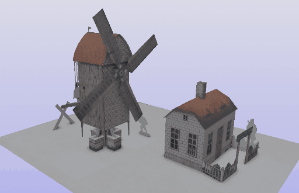

When Games
Met the Library:
What Industry Expertise
Can Do for the Digitization
of Kinetic Cultural Heritage
Casilda de Zulueta | Zoe Schubert
The Interactive Pasts Conference 4 | VALUE Foundation
Leiden, Netherlands | 8th-10th October 2025
ğŸ¤ğŸ“šâœ‚ï¸ğŸ§ğŸ‡ğŸ›ï¸ğŸ“·âœ¨
What is this talk about?
- In specific: the Pop-Up 3D Projekt.
- In general terms: a fortunate encounter of commercial games and VFX development with cultural heritage preservation.
Index
- Introduction 🤍🏛️
- The Collection & the (Digital) Vault 📚ğŸ§
- Digitization Methods & Pipelines ✂️📷
- Outlook 🐇✨
1. Introduction 🤍🏛️
Hi, we are the Pop-Up 3D team!
- Zoe Schubert
- Pop-Up 3D Project Coordinator / Kompakkt Lead Developer
- Jacky Lai
- Frontend Developer for Kompakkt
- Natalia Sucharek
- Photographer / Videographer / Photogrammetry
- Fenya Troch
- 3D Artist / Animator
- Casilda de Zulueta
- 3D Artist / Animator

Left to right: Fenya, Zoe, Natalia, Casilda and Jacky.
The Library and the Consortium
- Berlin State Library (SBB)
- Prussian Cultural Heritage Foundation (SPK)
- Other institutions in the SPK: State Museums, State Archives, Ibero-American Institute.
- NFDI4Culture
- National Research Data Infrastructure Consortium for Culture
- Publicly funded by the German Research Foundation (DFG)
- Other important actors:
- Prof. Dr. Achim Bonte (Director General SBB),
- Reinhard Altenhöner (Deputy of the Director General SBB),
- Prof. Dr. Ina Blümel (Data capture and enrichment, NFDI4Culture),
- Dr. Christian Mathieu (Research Adviser SBB),
- Sigrun Putjenter (Children and Youth Books Dept. Deputy SBB).
What are we working on?
- Digitizing and creating interactive visualizations of historical game books:
- All objects of the collection get digitized in video.
- All possible objects get 2D-scanned.
- Some objects get a 3D model.
- All 3D models with kinetic properties get animated.
- All 3D models get implemented in Kompakkt.
- Long term: creating standards for kinetic 3D digitizations.
2. The Collection & the (Digital) Vault 📚ğŸ§
100 Children's Books
- From early XIX Century to mid XX Century:
- Oldest: The history of little Fanny: exemplified in a series of figures, London 1810.
- Newest: Hallo! Meine Eisenbahn! Eßlingen 1950.
OK, but what is Kompakkt?
- An IIIF-compliant 3D viewer:
- Based on Babylon.js.
- Open access, open source.
- Currently getting expanded into Semantic Kompakkt to allow annotations:
- So interactions/movement can be referenced.
3. Digitization Methods & Pipelines ✂️📷
Database / Asset List

References & Resources
- Scans.
- Photographs.
- Photogrammetry.
Modeling & Texturing
- Modeling and UV-mapping with Blender:
- 1 Blender Unit = 1m.
- Photogrammetry requires retopology.
- Textures with Affinity Photo / Photoshop + additional materials with Substance Painter:
- PBR Metallic workflow.
- Textures in power of 2.

Animating
- Methods:
- Object animations (transforms over pivot points, parent-child hierarchy).
- Skinned mesh animations (with bones).
- Animation systems are designed for complex interactions.

4. Outlook 🐇✨
What's next
- Finish the models and animations.
- Upload and implement each object in the viewer.
- Publish documentation on the methods and special cases. For example:
- How do we implement translucient materials?
- How do we proceed with the digitization of damaged materials?
- Why is there no magic button for doing X?
- Why do people keep asking for an AI solution when we actually have a "magic button" (or a quick, reliable process that doesn't waste the energy supply of a small country)?
- Move on to the next collection ready to get the digital transformation treatment ✨
ğŸ¤ğŸ“šâœ‚ï¸ğŸ§ğŸ‡ğŸ›ï¸ğŸ“·âœ¨
GatdeSoia.es/talks/tipc4-pop-up-3d
Casilda de Zulueta | Zoe Schubert
Casilda.deZulueta@sbb.spk-berlin.de | Zoe.Schubert@sbb.spk-berlin.de